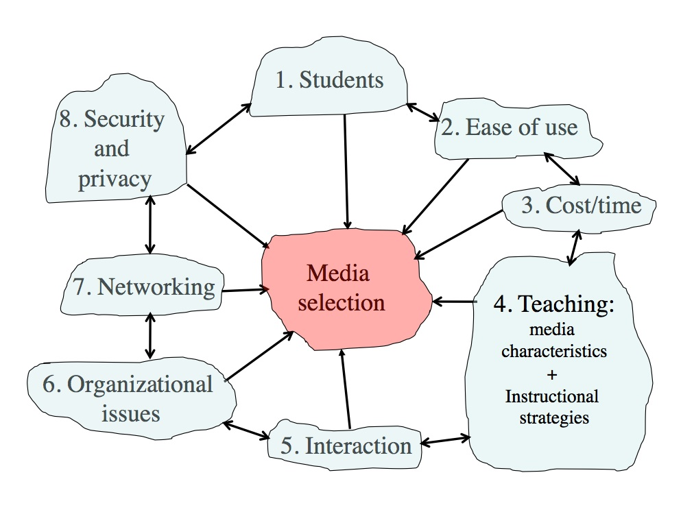
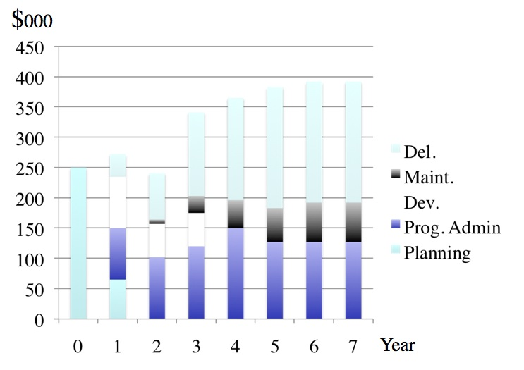
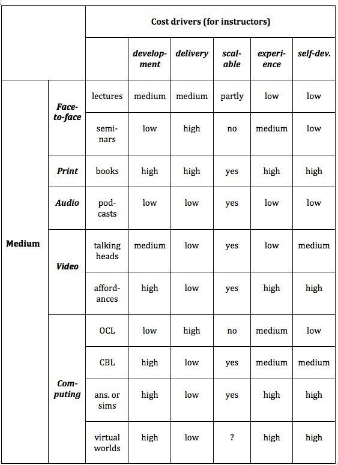
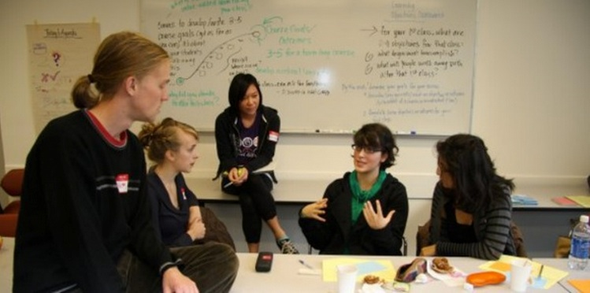
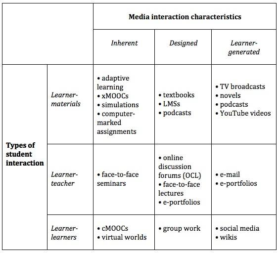
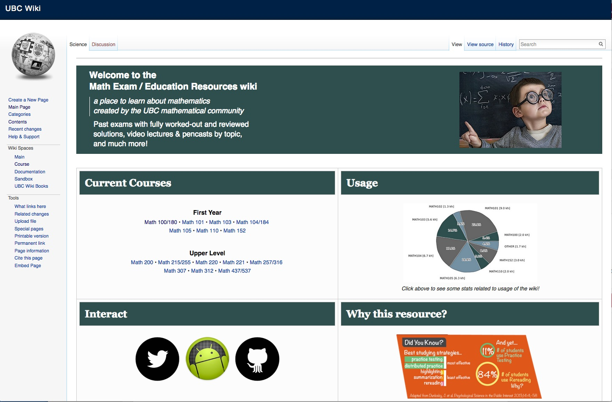
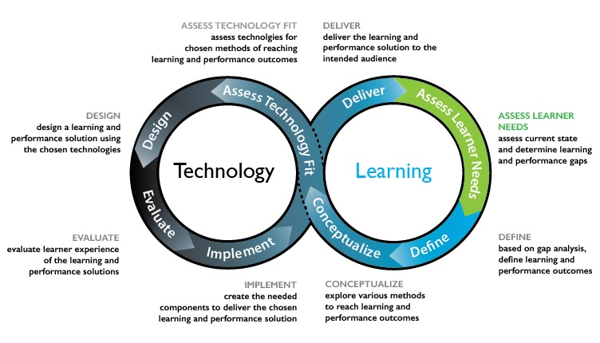

Chapter 8
Teaching in a Digital Age

Also in this chapter you will find the following activities:
Given the importance of the topic, there is relatively little literature on how to choose appropriate media or technologies for teaching. There was a flurry of not very helpful publications on this topic in the 1970s and 1980s, but relatively little since (Baytak, undated). Indeed, Koumi (1994) stated that:
there does not exist a sufficiently practicable theory for selecting media appropriate to given topics, learning tasks and target populations . . . the most common practice is not to use a model at all. In which case, it is no wonder that allocation of media has been controlled more by practical economic and human/political factors than by pedagogic considerations (p. 56).
Mackenzie (2002) comments in a similar vein:
When I am discussing the current state of technology with teachers around the country, it becomes clear that they feel bound by their access to technology, regardless of their situation. If a teacher has a television-computer setup, then that is what he or she will use in the classroom. On the other hand, if there is an LCD projector hooked up to a teacher demonstration station in a fully equipped lab, he or she will be more apt to use that set up. Teachers have always made the best of whatever they’ve got at hand, but it’s what we have to work with. Teachers make due.
Mackenzie (2002) has suggested building technology selection around Howard Gardner’s multiple intelligences theory (Gardner, 1983, 2006), following the following sequence of decisions:
learner → teaching objective → intelligences → media choice.
Mackenzie then allocates different media to support the development of each of Gardner’s intelligences. Gardner’s theory of multiple intelligences has been widely tested and adopted, and Mackenzie’s allocations of media to intelligences make sense intuitively, but of course it is dependent on teachers and instructors applying Gardner’s theory to their teaching.
A review of more recent publications on media selection suggests that despite the rapid developments in media and technology over the last 20 years, my ACTIONS model (Bates, 1995) is one of the major models still being applied, although with further amendments and additions (see for instance, Baytak, undated; Lambert and Williams, 1999; Koumi, 2006). Indeed, I myself modified the ACTIONS model, which was developed for distance education, to the SECTIONS model to cover the use of media in campus-based as well as distance education (Bates and Poole, 2003).
Patsula (2002) developed a model called CASCOIME which includes some of the criteria in the Bates models, but also adds additional and valuable criteria such as socio-political suitability, cultural friendliness, and openness/flexibility, to take into account international perspectives. Zaied (2007) conducted an empirical study to test what criteria for media selection were considered important by faculty, IT specialists and students, and identified seven criteria. Four of these matched or were similar to Bates’ criteria. The other three were student satisfaction, student self-motivation and professional development, which are more like conditions for success and are not really easy to identify before making a decision.
Koumi (2006) and Mayer (2009) have come closest to to developing models of media selection. Mayer has developed twelve principles of multimedia design based on extensive research, resulting in what Mayer calls a cognitive theory of multimedia learning. (For an excellent application of Mayer’s theory, see UBC Wikis.) Koumi (2015) more recently has developed a model for deciding on the best mix and use of video and print to guide the design of xMOOCs.
Mayer’s approach is valuable at a more micro-level when it comes to designing specific multimedia educational materials, as is Koumi’s work. Mayer’s cognitive theory of multimedia design suggests the best combination of words and images, and rules to follow such as ensuring coherence and avoiding cognitive overload. When deciding to use a specific application of multimedia, it provides very strong guidelines. It is nevertheless more difficult to apply at a macro level. Because Mayer’s focus is on cognitive processing, his theory does not deal directly with the unique pedagogical affordances or characteristics of different media. Neither Mayer nor Koumi address non-pedagogical issues in media selection, such as cost or access. Mayer and Koumi’s work is not so much competing as complementary to what I am proposing. I am trying to identify which media (or combinations of media) to use in the first place. Mayer’s theory then would guide the actual design of the application. I will discuss Mayer’s twelve principles further in Section 5 of this chapter, which deals with teaching functions.
It is not surprising that there are not many models for media selection. The models developed in the 1970s and 1980s took a very reductionist, behaviourist approach to media selection, resulting in often several pages of decision-trees, which are completely impractical to apply, given the realities of teaching, and yet these models still included no recognition of the unique affordances of different media. More importantly, technology is subject to rapid change, there are competing views on appropriate pedagogical approaches to teaching, and the context of learning varies so much. Finding a practical, manageable model founded on research and experience that can be widely applied has proved to be challenging.
At the same time, every teacher, instructor, and increasingly learner, needs to make decisions in this area, often on a daily basis. A model for technology selection and application is needed therefore that has the following characteristics:
For these reasons, then, I will continue to use the Bates’ SECTIONS model, with some modifications to take account of recent developments in technology, research and theory. The SECTIONS model is based on research, has stood the test of time, and has been found to be practical. SECTIONS stands for:
I will discuss each of these criteria in the following sections, and will then suggest how to apply the model.
Bates, A. (1995) Teaching, Open Learning and Distance Education London/New York: Routledge
Bates, A. and Poole, G. (2003) Effective Teaching with Technology in Higher Education San Francisco: Jossey-Bass/John Wiley and Son
Baytak, A.(undated) Media selection and design: a case in distance education Academia.edu
Gardner, H. (1983) Frame of Mind: The Theory of Multiple Intelligences New York: Basic Books
Gardner, H. (2006) Multiple Intelligences: New Horizons and Theory in Practice New York: Basic Books
Koumi, J. (1994). Media comparisons and deployment: A practitioner’s view. British Journal of Educational Technology, Vol. 25, No. 1
Koumi, J. (2006). Designing video and multimedia for open and flexible learning. London: Routledge.
Lambert, S. and Williams R. (1999) A model for selecting educational technologies to improve student learning Melbourne, Australia: HERDSA Annual International Conference, July
Mackenzie, W. (2002) Multiple Intelligences and Instructional Technology: A Manual for Every Mind. Eugene, Oregon: ISTE
Mayer, R. E. (2009). Multimedia Learning (2nd ed). New York: Cambridge University Press.
Nel, C., Dreyer, C. and Carstens (2001) Educational Technologies: A Classification and Evaluation Journal for Language Teaching Vol. 35, No. 4
Patsula, P. (2002) Practical guidelines for selecting media: An international perspective The Useableword Monitor, February 1
UBC Wikis (2014)Documentation: Design Principles for Multimedia Vancouver BC: University of British Columbia
Zaied, A. (2007) A Framework for Evaluating and Selecting Learning Technologies The International Arab Journal of Information Technology, Vol. 4, No. 2
The first criteria in the SECTIONS model is students.
At least three issues related to students need to be considered when choosing media and technology:
One of the fundamental changes resulting from mass higher education is that university and college teachers must now teach an increasingly diverse range of students. This increasing diversity of students presents major challenges for all teachers, not just post-secondary teachers. However, it has been less common for instructors at a post-secondary level to vary their approach within a single course to accommodate to learner differences, but the increasing diversity of students now requires that all courses should be developed with a wide variety of approaches and ways to learn if all students in the course are to be taught well.
In particular, it is important to be clear about the needs of the target group. First and second year students straight from high school are likely to require more support and help studying at a university or college level. They are likely to be less independent as learners, and therefore it may be a mistake to expect them to be able to study entirely through the use of technology. However, technology may be useful as a support for classroom teaching, especially if it provides an alternative approach to learning from the face-to-face teaching, and is gradually introduced, to prepare them for more independent study later in a program.
On the other hand, for students who have already been through higher education as a campus student, but are now in the workforce, a program delivered entirely by technology at a distance is likely to be attractive. Such students will have already developed successful study skills, will have their own community and family life, and will welcome the flexibility of studying this way.
Third and fourth year undergraduate students may appreciate a mix of classroom-based and online study or even one or two fully online courses, especially if some of their face-to-face classes are closed to further enrolments, or if students are working part-time to help cover some of the costs of being at college.
Lastly, within any single class or group of learners, there will be a wide range of differences in prior knowledge, language skills, and preferred study styles. The intelligent use of media and technology can help accommodate these differences. So, once again, it is important to know your students, and to keep this in mind when making decisions about what media or technology to use. This will be discussed further in Chapter 9.
Of all the criteria in determining choice of technology, this is perhaps the most discriminating. No matter how powerful in educational terms a particular medium or technology may be, if students cannot access it in a convenient and affordable manner they cannot learn from it. Thus video streaming may be considered a great way to get lectures to students off campus, but if they do not have Internet access at home, or if it takes four hours or a day’s wages to download, then forget it. Difficulty of access is a particular restriction on using xMOOCs in developing countries. Even if potential learners have Internet or mobile phone access, which 5 billion still do not, it often costs a day’s wages to download a single YouTube video – see Marron, Missen and Greenberg, 2014.
Any teacher or instructor intending to use computers, tablets or mobile phones for teaching purposes needs answers to a number of questions:
If students are expected to provide their own devices (which increasingly makes sense):
Students (as well as the instructor) need to know the answers to these questions before they enrol in a course or program. In order to answer these questions, you and your department must know what students will use their devices for. There is no point in requiring students to go to the expense of purchasing a laptop computer if the work they are required to do on it is optional or trivial. This means some advance planning on your part:
It will really help if your institution has good policies in place for student technology access (see Section 8.7). If the institution does not have clear policies or infrastructure for supporting the technologies you want to use, then your job is going to be a lot harder.
The answer to the question of access and the choice of technology will also depend somewhat on the mandate of the institution and your personal educational goals. For instance, highly selective universities can require students to use particular devices, and can help the relatively few students who have financial difficulties in purchasing and using specified devices. If though the mandate of the institution is to reach learners denied access to conventional institutions, equity groups, the unemployed, the working poor, or workers needing up-grading or more advanced education and training, then it becomes critical to find out what technology they have access to or are willing to use. If an institution’s policy is open access to anyone who wants to take its courses, the availability of equipment already in the home (usually purchased for entertainment purposes) becomes of paramount importance.
Another important factor to consider is access for student with disabilities. This may mean providing textual or audio options for deaf and visually impaired students respectively. Fortunately there are now well established practices and standards under the general heading of Universal Design standards. Universal Design is defined as follows:
Universal Design for Learning, or UDL, refers to the deliberate design of instruction to meet the needs of a diverse mix of learners. Universally designed courses attempt to meet all learners’ needs by incorporating multiple means of imparting information and flexible methods of assessing learning. UDL also includes multiple means of engaging or tapping into learners’ interests. Universally designed courses are not designed with any one particular group of students with a disability in mind, but rather are designed to address the learning needs of a wide-ranging group.
Brokop, F. (2008)
Most institutions with a centre for supporting teaching and learning will be able to provide assistance to faculty to ensure the course meets universal design standards. BCcampus has a very useful guide for preparing web-based materials that meet accessibility standards. Norquest College and eCampus Alberta have published a more detailed guide to ensuring online materials are accessible for persons with disabilities.
It may seem obvious that different students will have different preferences for different kinds of technology or media. The design of teaching would cater for these differences. Thus if students are ‘visual’ learners, they would be provided with diagrams and illustrations. If they are auditory learners, they will prefer lectures and podcasts. It might appear then that identifying dominant learning styles should then provide strong criteria for media and technology selection. However, it is not as simple as that.
McLoughlin (1999), in a thoughtful review of the implications of the research literature on learning styles for the design of instructional material, concluded that instruction could be designed to accommodate differences in both cognitive-perceptual learning styles and Kolb’s (1984) experiential learning cycle. In a study of new intakes conducted over several years at the University of Missouri-Columbia, using the Myers-Briggs inventory, Schroeder (1993) found that new students think concretely, and are uncomfortable with abstract ideas and ambiguity.
However, a major function of a university education is to develop skills of abstract thinking, and to help students deal with complexity and uncertainty. Perry (1984) found that learning in higher education is a developmental process. It is not surprising then that many students enter college or university without such ‘academic’ skills. Indeed, there are major problems in trying to apply learning styles and other methods of classifying learner differences to media and technology selection and use. Laurillard (2001) makes the point that looking at learning styles in the abstract is not helpful. Learning has to be looked at in context. Thinking skills in one subject area do not necessarily transfer well to another subject area. There are ways of thinking that are specific to different subject areas. Thus logical-rational thinkers in science do not necessarily make thoughtful husbands, or good literary critics.
Part of a university education is to understand and possibly challenge predominant modes of thinking in a subject area. While learner-centered teaching is important, students need to understand the inherent logic, standards, and values of a subject area. They also need to be challenged, and encouraged to think outside the box. This may clash with their preferred learning style. Indeed, the research on the effectiveness of matching instructional method to learning styles is at best equivocal. For instance, Dziuban et al. (2000), at the University of Central Florida, applied Long’s reactive behavior analysis of learning styles to students in both face-to-face classes and Web-based online classes. They found that learning style does not appear to be a predictor of who withdraws from online courses, nor were independent learners likely to do better online than other kinds of learners.
The limitation of learning styles as a guide to designing courses does not mean we should ignore student differences, and we should certainly start from where the student is. In particular, at a university level we need strategies to gradually move students from concrete learning based on personal experience to abstract, reflective learning that can then be applied to new contexts and situations. Technology can be particularly helpful for that, as we saw in Chapter 7.
Thus when designing courses, it is important to offer a range of options for student learning within the same course. One way to do this is to make sure that a course is well structured, with relevant ‘core’ information easily available to all students, but also to make sure that there are opportunities for students to seek out new or different content. This content should be available in a variety of media such as text, diagrams, and video, with concrete examples explicitly related to underlying principles. We shall see in Chapter 10 that the increasing availability of open educational resources makes the provision of this ‘richness’ of possible content much more viable.
Similarly, technology enables a range of learner activities to be made available, such as researching readings on the Web, online discussion forums, synchronous presentations, assessment through e-portfolios, and online group work. The range of activities increases the likelihood that a variety of learner preferences are being met, and also encourages learners to involve themselves in activities and approaches to learning where they may initially feel less comfortable. Such approaches to design are more likely to be effective than courses in multiple versions developed to meet different learning styles. In any case developing multiple versions of courses for different styles of learner is likely to be impractical in most cases. So avoid trying to match different media to different learning styles but instead ensure that students have a wide range of media (text, audio, video, computing) within a course or program.
Lastly, one should be careful in the assumptions made about student preferences for learning through digital technologies. On the one hand, technology ‘boosters’ such as Mark Prensky and Don Tapscott argue that today’s ‘digital natives’ are different from previous generations of students. They argue that today’s students live within a networked digital universe and therefore expect their learning also to be all digitally networked. It is also true that professors in particular tend to underestimate students’ access to advanced technologies (professors are often late adopters of new technology), so you should always try to find up-to-date information on what devices and technologies students are currently using, if you can.
On the other hand, it is also dangerous to assume that all students are highly ‘digital literate’ and are demanding that new technologies should be used in teaching. Jones and Shao (2011) conducted a thorough review of the literature on ‘digital natives’, with over 200 appropriate references, including surveys of relevant publications from countries in Europe, Asia, North America, Australia and South Africa. They concluded that:
Graduating students that have been interviewed about learning technologies at the University of British Columbia made it clear that they will be happy to use technology for learning so long as it contributes to their success (in the words of one student, ‘if it will get me better grades’) but the students also made it clear that it was the instructor’s responsibility to decide what technology was best for their studies.
It is also important to pay attention to what Jones and Shao are not saying. They are not saying that social media, personal learning environments, or collaborative learning are inappropriate, nor that the needs of students and the workforce are unchanging or unimportant, but the use of these tools or approaches should be driven by a holistic look at the needs of all students, the needs of the subject area, and the learning goals relevant to a digital age, and not by an erroneous view of what a particular generation of students are demanding.
In summary, one great advantage of the intelligent application of technology to teaching is that it provides opportunities for students to learn in a variety of ways, thus adapting the teaching more easily to student differences. Thus, the first step in media selection is to know your students, their similarities and differences, what technologies they already have access to, and what digital skills they already possess or lack that may be relevant for your courses. This is likely to require the use of a wide range of media within the teaching.
It is critical to know your students. In particular, you need the following information to provide an appropriate context for decisions about media and technology:
1. What is the mandate or policy of your institution, department or program with respect to access? How will students who do not have access to a chosen technology be supported?
2. What are the likely demographics of the students you will be teaching? How appropriate is the technology you are thinking of using for these students?
3. If your students are to be taught at least partly off campus, to which technologies are they likely to have convenient and regular access at home or work?
4. If students are to be taught at least partly on campus, what is – or should be – your or your department’s policy with regard to students’ access to devices in class?
5. What digital skills do you expect your students to have before they start the program?
6. If students are expected to provide their own access to technology, will you be able to provide unique teaching experiences that will justify the purchase or use of such technology?
7. What prior approaches to learning are the students likely to bring to your program? How suitable are such prior approaches to learning likely to be to the way you need to teach the course? How could technology be used to cater for student differences in learning?
There are many different ways to get the information needed to answer these questions. In many cases, you will still have to make decisions on insufficient evidence, but the more accurate information you have about your potential students, the better your likely choice of media and technology. Almost certainly, though, you will have a variety and diversity of students, so the design of your teaching will need to accommodate this.
BCcampus and CAPER-BC (2015) B.C. Open Textbook Accessibility Toolkit Victoria BC: BCcampus.
Brokop, F. (2008) Accessibility to E-Learning for Persons With Disabilities: Strategies, Guidelines, and Standards Edmonton AB: NorQuest College/eCampus Alberta
Dziuban, C. et al. (2000) Reactive behavior patterns go online The Journal of Staff, Program and Organizational Development, Vol. 17, No.3
Jones, C. and Shao, B. (2011) The Net Generation and Digital Natives: Implications for Higher Education Milton Keynes: Open University/Higher Education Academy
Kolb. D. (1984) Experiential Learning: Experience as the source of learning and development Englewood Cliffs NJ: Prentice Hall
Laurillard, D. (2001) Rethinking University Teaching: A Conversational Framework for the Effective Use of Learning Technologies New York/London: Routledge
Marron, D. Missen, C. and Greenberg, J. (2014) “Lo-Fi to Hi-Fi”: A New Way of Conceptualizing Metadata in Underserved Areas with the eGranary Digital Library Austin TX: International Conference on Dublin Core and Metadata Applications
McCoughlin, C. (1999) The implictions of the research literature on learning styles for the design of instructional material Australian Journal of Educational Technology, Vol. 15, No. 3
NorQuest College (2008) Accessibility to E-Learning for Persons With Disabilities: Strategies, Guidelines, and Standards Edmonton AB: ECampusAlberta
Perry, W. (1970) Forms of intellectual development and ethical development in the college years: a scheme New York: Holt, Rinehart and Winston
Prensky, M. (2001) ‘Digital natives, Digital Immigrants’ On the Horizon Vol. 9, No. 5
Schroeder, C. (1993) New students – new learning styles, Change, Sept.-Oct
In most cases, the use of technology in teaching is a means, not an end. Therefore it is important that students and teachers do not have to spend a great deal of time on learning how to use educational technologies, or on making the technologies work. The exceptions of course are where technology is the area of study, such as computer science or engineering, or where learning the use of software tools is critical for some aspects of the curriculum, for instance computer-aided design in architecture, spreadsheets in business studies, and geographical information systems in geology. In most cases, though, the aim of the study is not to learn how to use a particular piece of educational technology, but the study of history, mathematics, or biology.
One advantage of face-to-face teaching is that it needs relatively little advance preparation time compared with for instance developing a fully online course. Media and technologies vary in their capacity for speed of implementation and flexibility in up-dating. For instance, blogs are much quicker and easier to develop and distribute than video. Teachers and instructors then are much more likely to use technology that is quick and easy to use, and students likewise will expect such features in technology they are to use for studying. However, what’s ‘easy’ for instructors and students to use will depend on their digital literacy.
If a great deal of time has to be spent by the students and teachers in learning how to use for instance software for the development or delivery of course material, this distracts from the learning and teaching. Of course, there is a basic set of literacy skills that will be required, such as the ability to read and write, to use a keyboard, to use word processing software, to navigate the Internet and use Internet software, and increasingly to use mobile devices. These generic skills though could be considered pre-requisites. If students have not adequately developed these skills in school, then an institution might provide preparatory courses for students on these topics.
It will make life a lot easier for both teachers and students if an institution has strategies for supporting students’ use of digital media. For instance, at the University of British Columbia, the Digital Tattoo project prepares students for learning online in a number of ways:
If your institution does not have something similar, then you could direct your students to the Digital Tattoo site, which is fully open.
It is not only students though who may need prior preparation. Technology can be too seductive. You can start using it without fully understanding its structure or how it works. Even a short period of training – an hour of less – on how to use common technologies such as a learning management system or lecture capture could save you a lot of time and more importantly, enable you to see the potential value of all features and not just those that you stumble across.
A useful standard or criterion for the selection of course media or software is that ‘novice’ students (students who have never used the software before) should be studying within 20 minutes of logging on. This 20 minutes may be needed to work out some of the key functions of the software that may be unfamiliar, or to work out how the course Web site is organized and navigated. This is more of an orientation period though than learning new skills of computing. If there is a need to introduce new software that may take a little time to learn, for instance, a synchronous ‘chat’ facility, or video streaming, it should be introduced at the point where it is needed. It is important though to provide time within the course for the students to learn how to do this.
The critical factor in making technology transparent is the design of the interface between the user and the machine. Thus an educational program or indeed any Web site should be well structured, intuitive for the user to use, and easy to navigate.
Interface design is a highly skilled profession, and is based on a combination of scientific research into how humans learn, an understanding of how operating software works, and good training in graphic design. This is one reason why it is often wise to use software or tools that have been well established in education, because these have been tested and been found to work well.
The traditional generic interface of computers – a keyboard, mouse, and graphic user interface of windows and pull-down menus and pop-up instructions – is still extremely crude, and not isomorphic with most people’s preferences for processing information. It places very heavy emphasis on literacy skills and a preference for visual learning. This can cause major difficulties for students with certain disabilities, such as dyslexia or poor eyesight. However, in recent years, interfaces have started to become more user friendly, with touch screen and voice activated interfaces.
Nevertheless a great deal of effort often has to go into the adaptation of existing computer or mobile interfaces to make them easy to use in an educational context. The Web is just as much a prisoner of the general computer interface as any other software environment, and the educational potential of any Web site is also restricted by its algorithmic or tree-like structure. For instance, it does not always suit the inherent structure of some subject areas, or the preferred way of learning of some students.
There are several consequences of these interface limitations for teachers in higher education:
The reliability and robustness of the technology is also critical. Most of us will have had the frustration of losing work when our word programming software crashes or working ‘in the cloud’ and being logged off in the middle of a piece of writing. The last thing you want as a teacher or instructor is lots of calls from students saying they cannot get online access, or that their computer keeps crashing. (If the software locks up one machine, it will probably lock up all the others!) Technical support can be a huge cost, not just in paying technical staff to deal with service calls, but also in lost time of students and teachers.
‘Innovation in teaching’ will certainly bring rewards these days as institutions jostle for position as innovative institutions. It is often easier to get funding for new uses of technology than funding to sustain older but successful technologies. Although podcasts combined with a learning management system can be a very low-cost but highly effective teaching medium if good design is used, they are not sexy. It will usually be easier to get support for much more costly and spectacular technologies such as xMOOCs or virtual reality.
On the other hand, there is much risk in being too early into a new technology. Software may not be fully tested and reliable, or the company supporting the new technology may go bankrupt. Students are not guinea pigs, and reliable and sustainable service is more important to them than the glitz and glamour of untried technology. It is best to wait for at least a year for new apps or software to be fully tested in general applications before adopting them for teaching. It is wise then not to rush in and buy the latest software up-date or new product – wait for the bugs to be ironed out. Also if you plan to use a new app or technology that is not generally supported by the institution, check first with IT services to ensure there are not security, privacy or institutional bandwidth issues. Thus it is better to be at the leading edge, just behind the first wave of innovation, rather than at the bleeding edge.
A feature of online learning is that peak use tends to fall outside normal office hours. Thus it is really important that your course materials sit on a reliable server with high-speed access and 24 hour, seven days a week reliability, with automatic back-up on a separate, independent server located in a different building. Ideally, the servers should be in a secure area (with for instance emergency electricity supply) with 24 hour technical support, which probably means locating your servers with a central IT service or ‘in the cloud’, which means it is all the more important to ensure that materials are safely and independently backed up.
However, the good news is that most commercial educational software products such as learning management systems and lecture capture, as well as servers, are very reliable. Open source software too is usually reliable but probably slightly more at risk of technical failure or security breaches. If you have good IT support, you should receive very few calls from students on technical matters. The main technical issue that faculty face these days appears to be software up-grades to learning management systems. This often means moving course materials from one version of the software to the new version. This can be costly and time-consuming, particularly if the new version is substantially different from the previous version. Overall, though, reliability should not be an issue.
In summary, ease of use requires professionally designed commercial or open source course software, specialized help in graphics, navigation and screen design for your course materials, and strong technical support for server and software management and maintenance. Certainly in North America, most institutions now provide IT and other services focused specifically on supporting technology-based teaching. However, without such professional support, a great deal of your time as a teacher will be spent on technical issues, and to be blunt, if you do not have easy and convenient access to such support, you would be wise not to get heavily committed to technology-based teaching until that support is available.
Ease of use is another critical factor in the successful use of technology for teaching. Some of the questions then that you need to consider are:

Until as recently as ten years ago, cost was a major discriminator affecting the choice of technology (Hülsmann, 2000, 2003; Rumble, 2001; Bates, 2005). For instance, for educational purposes, audio (lectures, radio, audio-cassettes) was far cheaper than print, which in turn was far cheaper than most forms of computer-based learning, which in turn was far cheaper than video (television, cassettes or video-conferencing). All these media were usually seen as either added costs to regular teaching, or too expensive to use to replace face-to-face teaching, except for purely distance education on a fairly large scale.
However, there have been dramatic reductions in the cost of developing and distributing all kinds of media (except face-to-face teaching) in the last ten years, due to several factors:
The good news then is that in general, and in principle, cost should no longer be an automatic discriminator in the choice of media. If you are happy to accept this statement at face value, than you can skip the rest of this chapter. Choose the mix of media that best meets your teaching needs, and don’t worry about which medium is likely to cost more. Indeed, a good case could be made that it would now be cheaper to replace face-to-face teaching with purely online learning, if cost was the only consideration.
In practice however costs can vary enormously both between and within media, depending once again on context and design. Since the main cost from a teacher’s perspective is their time, it is important to know what are the ‘drivers’ of cost, that is, what factors are associated with increased costs, depending on the context and the medium being used. These factors are less influenced by new technological developments, and can therefore be seen as ‘foundational’ principles when considering the costs of educational media.
Unfortunately there are many different factors that can influence the actual cost of using media in education, which makes a detailed discussion of costs very complex (for a more detailed treatment, see Bates and Sangrà, 2011). As a result, I will try to identify the main cost drivers, then provide a table that provides a simplified guide to how these factors influence the costs of different media, including face-to-face teaching. This guide again should be considered as a heuristic device. So see this section as Media Costs 101.
The main cost categories to be considered in using educational media and technologies, and especially blended or online learning, are as follows:
These are the costs needed to pull together or create learning materials using particular media or technologies. There are several sub-categories of development costs:
Development costs are usually fixed or ‘once only’ and are independent of the number of students. Once media are developed, they are usually scalable, in that once produced, they can be used by any number of learners without increased development costs. Using open educational resources can greatly reduce media development costs.
This includes the cost of the educational activities needed during offering the course and would include instructional time spent interacting with students, instructional time spent on marking assignments, and would include the time of other staff supporting delivery, such as teaching assistants, adjuncts for additional sections and instructional designers and technical support staff.
Because of the cost of human factors such as instructional time and technical support needed in media-based teaching, delivery costs tend to increase as student numbers increase, and also have to be repeated each time the course is on offer. In other words, they are recurrent. However, increasingly with Internet-based delivery, there is usually a zero direct technology cost in delivery.
Once materials for a course are created, they need to be maintained. Urls go dead, set readings may go out of print or expire, and more importantly new developments in the subject area may need to be accommodated. Thus once a course is offered, there are ongoing maintenance costs.
Instructional designers and/or media professionals can manage some of the maintenance, but nevertheless teachers or instructors will need to be involved with decisions about content replacement or updating. Maintenance is not usually a major time consumer for a single course, but if an instructor is involved in the design and production of several online courses, maintenance time can build to a significant amount.
Maintenance costs are usually independent of the number of students, but are dependent on the number of courses an instructor is responsible for, and are recurrent each year.
These include infrastructure or overhead costs, such as the cost of licensing a learning management system, lecture capture technology and servers for video steaming. These are real costs but not ones that can be allocated to a single course but will be shared across a number of courses. Overheads are usually considered to be institutional costs and, although important, probably will not influence a teacher’s decision about which media to use, provided these services are already in place and the institution does not directly charge for such services.
The primary factors that drive cost are
Production of technology-based materials such as a video program, or a Web site, is a fixed cost, in that it is not influenced by how many students take the course. However, production costs can vary depending on the design of the course. Engle (2014) showed that depending on the method of video production, the development costs for a MOOC could vary by a factor of six (the most expensive production method – full studio production – being six times that of an instructor self-recording on a laptop).
Nevertheless, once produced, the cost is independent of the number of students. Thus the more expensive the course to develop, the greater the need to increase student numbers to reduce the average cost per student. (Or put another way, the greater the number of students, the more reason to ensure that high quality production is used, whatever the medium). In the case of MOOCs (which tend to be almost twice as expensive to develop as an online course for credit using a learning management system – University of Ottawa, 2013) the number of learners is so great that the average cost per student is very small. Thus there are opportunities for economies of scale from the development of digital material, provided that student course enrolments can be increased (which may not always be the case). This can be described as the potential for the scalability of a medium.
Similarly, there are costs in teaching the course once the course is developed. These tend to be variable costs, in that they increase as class size increases. If student-teacher interaction, through online discussion forums and assignment marking, is to be kept to a manageable level, then the teacher-student ratio needs to be kept relatively low (for instance, between 1:25 to 1:40, depending on the subject area and the level of the course). The more students, the more time a teacher will need to spend on delivery, or additional contract instructors will need to be hired. Either way, increased student numbers generally will lead to increased costs. MOOCs are an exception. Their main value proposition is that they do not provide direct learner support, so have zero delivery costs. However, this is probably the reason why such a small proportion of participants successfully complete MOOCs.
There may be benefits then for a teacher or for an institution in spending more money up front for interactive learning materials if this leads to less demand for teacher-student interaction. For instance, a mathematics course might be able to use automated testing and feedback and simulations and diagrams, and pre-designed answers to frequently asked questions, with less or even no time spent on individual assignment marking or communication with the teacher. In this case it may be possible to manage teacher-student ratios as high as 1:200 or more, without significant loss of quality.
Also, experience in using or working with a particular medium or delivery method is also important. The first time an instructor uses a particular medium such as podcasting, it takes much longer than subsequent productions or offerings. Some media or technologies though need much more effort to learn to use than others. Thus a related cost driver is whether the instructor works alone (self-development) or works with media professionals. Self-developing materials will usually take longer for an instructor than working with professionals.
There are advantages in teachers and instructors working with media professionals when developing digital media. Media professionals will ensure the development of a quality product, and above all can save teachers or instructors considerable time, for instance through the choice of appropriate software, editing, and storage and streaming of digital materials. Instructional designers can help in suggesting appropriate applications of different media for different learning outcomes. Thus as with all educational design, a team approach is likely to be more effective, and working with other professionals will help control the time teachers and instructors spend on media development.
Lastly, design decisions are critical. Costs are driven by design decisions within a medium. For instance cost drivers are different between lectures and seminars (or lab classes) in face-to-face teaching. Similarly, video can be used just to record talking heads, as in lecture capture, or can be used to exploit the affordances of the medium (see Chapter 7), such as demonstrating processes or location shooting. Computing has a wide and increasing range of possible designs, including online collaborative learning (OCL), computer-based learning, animations, simulations or virtual worlds. Social media are another group of media that also need to be considered.
Figure 8.4.2 attempts to capture the complexity of cost factors, focusing mainly on the perspective of a teacher or instructor making decisions. Again, this should be seen as a heuristic device, a way of thinking about the issue. Other factors could be added (such as social media, or maintenance of materials). I have given my own personal ratings for each cell, based on my experience. I have taken conventional teaching as a medium or ‘average’ cost, then ranked cells as to whether there is a higher or lower cost factor for the particular medium. Other readers may well rate the cells differently.

Although the time it takes to develop and deliver learning using different technologies is likely to influence an instructor’s decision about what technology to use, it is not a simple equation. For instance, developing a good quality online course using a mix of video and text materials may take much more of the instructor’s time to prepare than if the course was offered through classroom teaching. However, the online course may take less time in delivery over several years, because students may be spending more time on task online, and less time in direct interaction with the instructor. Once again, we see that design is a critical factor in how costs are assessed.
In short, from an instructor perspective, time is the critical cost factor. Technologies that take a lot of time to use are less likely to be used than those that are easy to use and thus save time. But once again design decisions can greatly affect how much time teachers or instructors need to spend on any medium, and the ability of teachers and students to create their own educational media is becoming an increasingly important factor.
In recent years, university faculty have generally gravitated more to lecture capture for online course delivery, particularly in institutions where online or distance learning is relatively new, because it is ‘simpler’ to do than redesign and create mainly text based materials in learning management systems. Lecture capture also more closely resembles the traditional classroom method. Pedagogically though (depending on the subject area) it may be less effective than an online course using collaborative learning and online discussion forums. Also, from an institutional perspective lecture capture has a much higher technology cost than a learning management system.
Also, students themselves can now use their own devices to create multimedia materials for project work or for assessment purposes in the form of e-portfolios. Media allow instructors, if they wish, to move a lot of the hard work in teaching and learning from themselves to the students. Media allow students to spend more time on task, and low cost, consumer media such as mobile phones or tablets enable students themselves to create media artefacts, enabling them to demonstrate their learning in concrete ways. This does not mean that instructor ‘presence’ is no longer needed when students are studying online, but it does enable a shift in where and how a teacher or instructor can spend their time in supporting learning.
Bates, A. (2005) Technology, e-Learning and Distance Education London/New York: Routledge
Bates, A. and Sangrà, A. (2011) Managing Technology in Higher Education San Francisco: Jossey–Bass/John Wiley and Co
Engle, W. (2104)UBC MOOC Pilot: Design and Delivery Vancouver BC: University of British Columbia
Hülsmann, T. (2000) The Costs of Open Learning: A Handbook Oldenburg: Bibliotheks- und Informationssytem der Universität Oldenburg
Hülsmann, T. (2003) Costs without camouflage: a cost analysis of Oldenburg University’s two graduate certificate programs offered as part of the online Master of Distance Education (MDE): a case study, in Bernath, U. and Rubin, E., (eds.) Reflections on Teaching in an Online Program: A Case Study Oldenburg, Germany: Bibliothecks-und Informationssystem der Carl von Ossietsky Universität Oldenburg
Rumble, G. (2001) The Cost and Costing of Networked Learning Journal of Asynchronous Learning Networks, Volume 5, Issue 2
University of Ottawa (2013)Report of the e-Learning Working Group Ottawa ON: The University of Ottawa
Chapter 7 discussed the various pedagogical differences between media. Identifying appropriate uses of media is both an increasingly important requirement of teachers and instructors in a digital age, and a very complex challenge. This is one reason for working closely with instructional designers and media professionals whenever possible. Teachers working with instructional designers will need to decide which media they intend to use on pedagogical as well as operational grounds, which was the purpose of Chapter 7.
However, once the choice of media has been made, by focusing on design issues we can provide further guidelines for making appropriate use of media. In particular, having gone through the process suggested in Chapter 7 of identifying possible teaching roles or functions for different media, we can then draw on the work of Mayer (2009) and Koumi (2006, 2015) to ensure that whatever choice or mix of media we have decided on, the design leads to effective teaching.
Mayer’s research focused heavily on cognitive overload in rich, multimedia teaching. From all his research over many years, Mayer identified 12 principles of multimedia design, based on how learners cognitively process multimedia:
People learn better when extraneous words, pictures and sounds are excluded rather than included. Basically, keep it simple in media terms.
People learn better when cues that highlight the organization of the essential material are added. This replicates earlier findings by Bates and Gallagher (1977). Students need to know what to look for in multimedia materials.
People learn better from graphics + narration, than from graphics, narration and on-screen text.
People learn better when corresponding words and pictures are presented near rather than far from each other on the page or screen
People learn better when corresponding words and pictures are presented simultaneously rather than successively.
People learn better when a multimedia lesson is presented in user-paced segments rather than as a continuous lesson. Thus several ‘YouTube’ length videos are more likely to work better than a 50 minute video.
People learn better from a multimedia lesson when they know the names and the characteristics of the main concepts. This suggests a design feature for flipped classrooms, for instance. It may be better to use a lecture or readings that provide a summary of key concepts and principles before showing more detailed examples or applications of such principles in a video.
People learn better from graphics and narration than from animation and on-screen text. This reflects the importance of learners being able to combine both hearing and viewing at the same time to reinforce each other in specific ways.
People learn better from words and pictures than from words alone. This also reinforces what I wrote in 1995: Make all four media available to teachers and learners (Bates, 1995, p.13).
People learn better from multimedia lessons when words are in conversational style rather than formal style. I would go even further than Mayer here. Multimedia can enable learners (particularly distance learners) to relate to the instructor, as suggested by Durbridge’s research (1983, 1984) on audio combined with text. Providing a ‘human voice and face’ to the teaching helps motivate learners, and makes multimedia teaching feel that it is directed solely at the individual learner, if a conversational style is adopted.
People learn better when the narration in multimedia lessons is spoken in a friendly human voice rather than a machine voice.
People do not necessarily learn better from a multimedia lesson when the speaker’s image is added to the screen.
In re-reading Mayer’s work, I am struck by the similarities in findings, using different research methods, different multimedia technologies, and different contexts, to the research from the Audio-Visual Media Research Group at the British Open University in the 1970s and 1980s (Bates, 1985).
More recently, the University of British Columbia has done an excellent job of suggesting how Mayer’s design principles could be operationalised. Staff at the University of British Columbia have combined Mayer’s findings with Robert Talbert’s experience from developing a series of successful screencasts on mathematics, into a set of practical design guidelines for multimedia production.
Talbert’s key design principles are:
Most teachers and instructors would put the effectiveness of a medium for teaching and learning as the first criterion. If the technology is not educationally effective, why would you use it? However, if a student cannot access or use a technology, there will be no learning from that technology, no matter how it is designed. Furthermore, motivated teachers will overcome weaknesses in a particular technology, or conversely teachers inexperienced in using media will often under-exploit the potential of a technology.
Thus design decisions are critical in influencing the effectiveness of a particular technology. Well-designed lectures will teach better than a poorly designed online course, and vice versa. Similarly, students will respond differently to different technologies due to preferred learning styles or differences in motivation. Students who work hard can overcome poor use of learning technologies. It is not surprising then that with so many variables involved, teaching and learning is a difficult discriminator for selecting and using technologies. Access (and ease of use) are stronger discriminators than teaching effectiveness in selecting media.
Therefore, it is not enough to focus just on the design of multimedia materials, as important as design is, even considering just the pedagogical context. The choice and use of media need to be related to other factors (what Mayer calls ‘boundary conditions’), such as individual differences between learners, the complexity of the content, and the desired learning outcomes. Thus when considering media from a strictly teaching perspective, the following questions need to be considered:
Working through these questions is likely to be an iterative rather than a sequential process. Depending on the way you prefer to think about and make decisions, it may help to write down the answers to each of the questions, but going through the process of thinking about these questions is probably more important, leaving you with the freedom to make choices on a more intuitive basis, having first taken all these – and other – factors into consideration.
Bates, A. (1985) Broadcasting in Education: An Evaluation London: Constables
Bates, A. (1995) Teaching, Open Learning and Distance Education London/New York: Routledge
Bates, A. and Gallagher, M. (1977) Improving the Effectiveness of Open University Television Case-Studies and Documentaries Milton Keynes: The Open University (I.E.T. Papers on Broadcasting, No. 77)
Durbridge, N. (1983) Design implications of audio and video cassettes Milton Keynes: Open University Institute of Educational Technology
Durbridge, N. (1984) Audio cassettes, in: Bates, A. (ed.) The Role of Technology in Distance Education London: Routledge (re-published in 2014)
Koumi, J. (2006). Designing video and multimedia for open and flexible learning. London: Routledge
Koumi, J. (2015) Learning outcomes afforded by self-assessed, segmented video-print combinations Academia.edu (unpublished)
Mayer, R. E. (2009). Multimedia learning (2nd ed). New York: Cambridge University Press
UBC Wikis (2014) Documentation: Design Principles for Multimedia Vancouver BC: University of British Columbia
The fifth element of the SECTIONS model for selecting media is interaction. How do different media enable interaction? The ‘affordance’ of interaction is critically important, as there is now an overwhelming amount of research evidence to suggest that students learn best when they are ‘active’ in their learning. But what does this mean? And what role can or do new technologies play in supporting active learning?
There are three different ways learners can interact when studying (Moore, 1989), and each of these ways requires a somewhat different mix of media and technology.
This is the interaction generated when students work on a particular medium, such as a printed textbook, a learning management system, or a short video clip, without direct intervention from an instructor or other students. This interaction can be ‘reflective’, without any overt actions, or it can be ‘observable’, in the form of an assessed response, such as a multiple choice test, or as a contribution to a discussion, or as notes to assist memory and comprehension.
Computer technology can greatly facilitate learners’ interaction with learning resources. Self-administered online tests can provide feedback to students on their comprehension or coverage of a subject area. Such tests can also provide feedback to teachers on topic areas where students are having difficulty, and can also be used for grading of students on their comprehension. Using standard test software built into learning management systems, students can be automatically assessed and graded on their comprehension of course materials. More advanced activities might include composing music using software that converts musical notation to audio, entering data to test concepts through online simulations, or participating in games or decision-making scenarios controlled by the computer. Thus computer-managed learner interaction is particularly good for developing comprehension and understanding of concepts and procedures, but it has limitations in developing the higher order learning skills of analysis, synthesis and critical thinking, without additional human intervention of some kind.
There are other ways besides computer-managed learning to facilitate interaction between learners and learning material. Textbooks may include activities set by the author (as in this textbook), or instructors can set student activities around set readings. Other student activities might include reading text or watching videos embedded in a learning management system, conducting a structured approach to finding and analyzing web-based materials, or downloading and editing information from the web to create e-portfolios of work. These activities may or may not be assessed, although evidence suggests that students, and in particular students studying online, tend to focus more an assessed activities.
In other words, with good design and adequate resources, technology-based instruction can provide high levels of student interaction with the learning materials. There are strong economic advantages in exploiting the possibilities of learners’ interaction with learning materials, because intense student-interaction with learning resources increases the time students spend on learning, which tends to lead to increased learning (see Means et al., 2010). Perhaps more importantly, such activity, when well designed, can reduce the time the teacher needs to spend on interacting with each student.
Student-teacher interaction is often needed though in order to develop many of the higher order learning outcomes, such as analysis, synthesis, and critical thinking. This is particularly important for developing academic learning, where students are challenged to question ideas, and to acquire deep understanding. This often requires dialogue and conversation, either one-on-one between instructor and students, or between an instructor and a group of students. The role of the teacher in for instance either face-to-face seminars or online collaborative learning is therefore critical.
Some technologies, such as online discussion forums, enable or encourage such dialogue or discourse between students and instructors at a distance. The main limitation of student-teacher interaction is that it can be time-demanding for the teacher, and therefore does not scale easily.

High quality student-student interaction can be provided equally well both in face-to-face and online learning contexts. Asynchronous online discussion forums built into learning management systems can enable this kind of interaction. Connectivist MOOCs and communities of practice also enable student-student interaction.
Again though quality depends on good design. Merely putting students together in a group, whether online or face-to-face, is not likely to lead to either high levels of participation or high quality learning without careful thought being given to the educational goals of discussion within a course, the topics for discussion and their relationship to assessment and learning outcomes, and without strong preparation of the students by the instructor for self-directed discussions (see Chapter 4, Section 4, for more on this.)
In a technologically rich learning environment, then, a key decision for a teacher or course designer is choosing the best mix of these three different kinds of interaction, taking into consideration the epistemological approach, the amount of time available for both students and instructor, and the desired learning outcomes. Technology can enable all three kinds of interaction.
Different technologies can enhance or inhibit each of the three types of interactivity outlined above. This again means looking at the dimension of interactivity as it applies to different media and technology. This dimension has three components or points on the dimension in terms of the extent an active response from a user is required when a medium or technology is used for teaching.
Some media are inherently ‘active’ in that they ‘push’ learners to respond. An example is adaptive learning, where students cannot progress to the next stage of learning without interacting through a test that ascertains whether they have learned sufficiently to progress to the next stage, or what ‘corrective’ learning they still need to do. Behaviourist computer-based learning is inherently interactive, as it forces learners to respond. It is not surprising that technologies that control how a learner responds are often associated with more behaviourist approaches to teaching and learning.
Although some media or technologies are not inherently interactive, they can be explicitly designed to encourage interaction with learners. For instance, although a web page is not inherently interactive, it can be designed to be interactive, by adding a comment box or by requiring users to enter information or make choices. In particular, teachers or instructors can add or suggest activities within a particular medium. A podcast can be designed so that students stop the podcast every few minutes to do an activity based on the content of the podcast. This approach can be can applied just as much to textbooks, where activities can be included, as to web pages.
In many cases, though, a medium will require the intervention of a teacher or instructor both to set activities around the learning materials and to provide appropriate feedback, thus adding to rather than reducing the workload of instructors. Thus where instructors have to intervene either to design activities or to provide feedback, the cost or time demands on the instructor are likely to be greater than if the other two kinds of interaction are used.
Some media may not have explicit interaction built in, but end users may still voluntarily interact with the medium, either cognitively and/or through some physical response. For instance someone in an art gallery may cognitively or emotionally respond to a particular painting (while others may just glance at it or pass it by). Students may choose to make sketches or drawings from the painting. Learners may respond in similar ways to reading a novel or poem. The creators of the work may in fact deliberately design the work to encourage reflection or analysis, but not in explicit ways, leaving the interpretation of a work to the viewer or reader. (This of course is a constructivist approach to learning.) Media that encourage learners independently to be active without the necessary intervention of a teacher or instructor also have cost advantages, although the quality of the interaction will be more difficult to monitor or assess.
Thus one dimension of interactivity is control: to what extent is interaction controlled or enabled by the technology, by the creators/instructors, or by the users/learners? It can be seen that this is a complex dimension, once again influenced by epistemological positions, and also by design decisions on the teacher’s part. These categories of interactivity are in no way ‘fixed’, with different levels or types of interaction possible within the same medium or technology. In the end, interaction needs to be linked to desired learning outcomes. What kind of interaction will best lead to a particular type of learning outcome, and what technology or medium best provides this kind of interaction?
Feedback is an important aspect of interaction, and timely and appropriate feedback on learner activities is often essential for effective learning. In particular to what extent is feedback possible within a particular medium? Although for instance a learner may respond actively to a poem in a book, feedback on that interaction is usually not available just from the reading. Some other medium will need to be used to provide that feedback, such as a face-to-face poetry class or an online discussion forum.
On the other hand, with computer-based learning, once a student has responded to a multiple-choice question, the computer can mark the question and give almost instant feedback. However, with some technologies such as print, providing appropriate or immediate feedback to learners on their activities may be difficult or impossible. Although ‘model’ or ‘correct’ answers might be provided in a text on another page, quality feedback on activities must be provided by a teacher or instructor when using a printed medium.
Thus media and technologies again differ in their capacity to provide various kinds of feedback. From a teaching perspective, it is important to be clear about what kind of feedback is likely to be most effective, and then the most effective way to provide that feedback. In particular, under what circumstances is it appropriate to automate feedback, and when should feedback be provided by a teacher, instructor or perhaps a teaching assistant?
In Figure 8.6.4 I have analysed the interactive qualities of different educational media along two different dimensions: different types of student interaction; and characteristics of the medium, in terms of whether interaction is built into the medium, or needs to be added through deliberate design, or whether it is left to the learner to decide how to interact.

I have allocated a number of different media here according to the type of learner activity they help generate. The actual location though of some of these media will be dependent on design decisions made by the instructor. For instance, a podcast could be accompanied by an activity (designed), or just be a straight broadcast, with the student left to interpret its meaning and purpose in the course (learner-generated). In some cases, an activity may be triggered by one medium (such as a podcast) but the actual activity and the feedback may take place in another medium (such as through an online assessment).
Thus it can be seen that media and technology are somewhat slippery when it comes to categorising them in terms of interaction, because instructors and learners often have a choice in how the medium will actually be used, and that will affect how learner interaction and feedback takes place within a single medium. Thus once again the quality of the design of the interactive experiences is as important as the medium of choice for enabling the activity, although an inappropriate choice of technology can reduce the level of activity and/or the quality of the interactions. In reality teachers and learners are likely to use a combination of media and technologies to ensure high quality interactivity. However, using a number of different media is likely to increase cost and workload for both instructors and learners.
Once again, there is no evaluative judgement on my part in terms of which media or characteristics provide the ‘best’ interactivity. The choice of medium should depend on the kind of activities that are judged important by a teacher or instructor within the overall context of the teaching. The purpose of this analysis is to sensitize you to the differences between educational media in generating or facilitating different types of interactivity, so that you can make informed decisions. In this case, though, there are no clear media or technology ‘winners’ in terms of interactivity. Design decisions are likely to be more important than technology choice. Nevertheless, technology can enable students separated from their instructors still to get quality activities and feedback, and when appropriately used, technology used to support activities can result in more time on task for students.
1. In terms of the skills I am trying to develop, what kinds of interaction will be most useful? What media or technology could I use to facilitate that kind of interaction?
2. In terms of the effective use of my time, what kinds of interaction will produce a good balance between student comprehension and student skills development, and the amount of time I will be interacting personally or online with students?
Means, B. et al. (2009) Evaluation of Evidence-Based Practices in Online Learning: A Meta-Analysis and Review of Online Learning Studies Washington, DC: US Department of Education
Moore, M.G. (1989) Three types of interaction American Journal of Distance Education, Vol.3, No.2
One of the critical issues that will influence the selection of media by teachers and instructors is
If an institution is organised around a set number of classroom periods every day, and the use of physical classrooms, the teachers are likely to focus mainly on classroom delivery. As Mackenzie was quoted in Section 8.1: ‘Teachers have always made the best of whatever they’ve got at hand, but it’s what we have to work with. Teachers make due.’ The reverse is equally true. If the school or university does not support a particular technology, teachers and instructors quite understandably won’t use it. Even if the technology is in place, such as a learning management system or a video production facility, if an instructor is not trained or oriented to its use and potential, then it will either be underused or not used at all.
Most institutions that have successfully introduced media and technology for teaching on a large scale have recognized the need for professional support for faculty, by providing instructional designers, media designers and IT support staff to support teaching and learning. Some institutions also provide funding for innovative teaching projects.
A major implication of using technology is the need to reorganise and restructure the teaching and technology support services in order to exploit and use the technology efficiently. Too often technology is merely added on to an existing structure and way of doing things. Reorganisation and restructuring is disruptive and costly in the short-term, but usually essential for successful implementation of technology-based teaching (see Bates and Sangrà, 2011, for a full discussion of management strategies for supporting the use of technology for teaching in higher education, and Marshall, 2007, for a method to assess institutional readiness for e-learning).
Because of the inertia in institutions, there is often a bias towards those technologies that can be introduced with the minimum of organisational change, although these may not be the technologies that would have maximum impact on learning. These organisational challenges are extremely difficult, and are often major reasons for the slow implementation of new technology.
Even those experienced in using media for teaching and learning would be wise to work with professional media producers when creating any of the media discussed in this chapter (with the possible exception of social media). Indeed, it is usually useful if not essential to work also with an instructional designer to determine before too much work is done which media are likely to be the most appropriate. It is important for the choice of technology to be driven by educational goals, rather than starting with a particular medium or technology in mind.
There are several reasons for working with professionals:
The key point here is that although it is now possible for teachers and instructors to produce reasonably good quality audio and video on their own, they will always benefit from the input of professionals in media production.
1. How much and what kind of help can I get from the institution in choosing and using media for teaching? Is help easily accessible? How good is the help? Do the support people have the media professionalism I will need? Are they up to date in the use of new technologies for teaching?
2. Is there possible funding available to ‘buy me out’ for a semester and/or to fund a teaching assistant so I can concentrate on designing a new course or revising an existing course? Is there funding for media production?
3. To what extent will I have to follow ‘standard’ technologies, practices and procedures, such as using a learning management system, or lecture capture system, or will I be encouraged and supported to try something new?
4. Are there already suitable media resources freely available that I can use in my teaching, rather than creating everything from scratch? Can I get help from the library for instance in identifying these resources and dealing with any copyright issues?
If the answers are negative for each of these questions, you would be wise to set very modest goals initially for using media and technology. Nevertheless the good news is that it is increasingly easy to create and manage your own media such as web sites, blogs, wikis, podcasts and even simple video production. Furthermore students themselves are often capable and interested in participating or helping with creating learning resources, if given the chance. And above all, there is an increasing amount of really good educational media coming available for free use for educational purposes, as we shall see in Chapter 10.
Bates, A. and Sangrà, A. (2011) Managing Technology in Higher Education San Francisco: Jossey–Bass/John Wiley and Co.
Marshall, S. (2007). eMM Version Two Process Assessment Workbook Version 2.3.Wellington NZ: Victoria University of Wellington

This is a change from earlier versions of the SECTIONS model, where ‘N’ stood for novelty. However, the issues that I previously raised under novelty have been included in Section 8.3, ‘Ease of Use’. This has allowed me to replace ‘Novelty’ with ‘Networking’, to take account of more recent developments in social media.
In essence, an increasingly important question that needs to be asked when selecting media is:
If the answer to this is an affirmative, then this will affect what media to use, and in particular will suggest the use of social media such as blogs, wikis, Facebook, LinkedIn, or Google Hangout.
There are at least five different ways social media are influencing the application of networking in course design:
Some instructors are combining social media for external networking with ‘standard’ institutional technologies such as a learning management system. The LMS, which is password protected and available only to the instructor and other enrolled students, allows for ‘safe’ communication within the course. The use of social media allows for connections with the external world (contributions can still be screened by the course blog or wiki administrator by monitoring and approving contributions.)
For instance, a course on Middle Eastern politics could have an internal discussion forum focused on relating current events directly to the themes and issues that are the focus of the course, but students may manage their own, public wiki that encourages contributions from Middle East scholars and students, and indeed anyone from the general public. Comments may end up being moved into and out of the more closed class discussion forum as a result.
Other instructors are moving altogether away from ‘standard’ institutional technology such as learning management systems and lecture capture into the use of social media for managing the whole course. For instance, UBC’s course ETEC 522 uses WordPress, YouTube videos and podcasts for instructor and student contributions to the course. Indeed the choice of social media on this course changes every year, depending on the focus of the course, and new developments in social media. Jon Beasley-Murray at the University of British Columbia built a whole course around students creating a high level (featured-article) Wikipedia entry on Latin American literature (Latin American literature WikiProject – see Beasley-Murray, 2008).
This is a particularly interesting development where students themselves use social media to create resources to help other students. For instance, graduate math students at UBC have created the Math Exam/Education Resources wiki, which provides ‘past exams with fully worked-out and reviewed solutions, video lectures & pencasts by topic‘. Such sites are open to anyone needing help in their studying, not just UBC students.
cMOOCs are an obvious example of self-managed learning groups using social media such as webinars, blogs and wikis.
YouTube in particular is becoming increasingly popular for instructors to use their knowledge to create resources available to anyone. The best example is still the Khan Academy, but there are many other examples. xMOOCs are another example.
Once again, the decision to ‘open up’ teaching is as much a philosophical or value decision as a technology decision, but the technology is now there to encourage and enable this philosophy.
Beasly-Murray, J. (2008) Was introducing Wikipedia to the classroom an act of madness leading only to mayhem if not murder? Wikipedia, March 18
This too is a change from earlier versions of the SECTIONS model, where ‘S’ stood for speed, in terms of how quickly a technology enabled a course to be developed.. However, the issues that I previously raised under speed have also been included in Section 8.3, ‘Ease of Use’. This has allowed me to replace ‘Speed’ with ‘Security and privacy’, which have become increasingly important issues for education in a digital age.
Teachers, instructors and students need a private place to work online. Instructors want to be able to criticize politicians or corporations without fear of reprisal; students may want to keep rash or radical comments from going public or will want to try out perhaps controversial ideas without having them spread all over Facebook. Institutions want to protect students from personal data collection for commercial purposes by private companies, tracking of their online learning activities by government agencies, or marketing and other unrequested commercial or political interruption to their studies. In particular, institutions want to protect students, as far as possible, from online harassment or bullying. Creating a strictly controlled environment enables institutions to manage privacy and security more effectively.
Learning management systems provide password protected access to registered students and authorised instructors. Learning management systems were originally housed on servers managed by the institution itself. Password protected LMSs on secure servers have provided that protection. Institutional policies regarding appropriate online behaviour can be managed more easily if the communications are managed ‘in-house.’
However, in recent years, more and more online services have moved ‘to the cloud’, hosted on massive servers whose physical location is often unknown even to the institution’s IT services department. Contract agreements between an educational institution and the cloud service provider are meant to ensure security and back-ups.
Nevertheless, Canadian institutions and privacy commissioners have been particularly wary of data being hosted out of country, where it may be accessed through the laws of another country. There has been concern that Canadian student information and communications held on cloud servers in the USA may be accessible via the U.S. Patriot Act. For instance, Klassen (2011) writes:
Social media companies are almost exclusively based in the United States, where the provisions of the Patriot Act apply no matter where the information originates. The Patriot Act allows the U.S. government to access the social media content and the personally identifying information without the end users’ knowledge or consent.
The government of British Columbia, concerned with both the privacy and security of personal information, enacted a stringent piece of legislation to protect the personal information of British Columbians. The Freedom of Information and Protection of Privacy Act (FIPPA) mandates that no personally identifying information of British Columbians can be collected without their knowledge and consent, and that such information not be used for anything other than the purpose for which it was originally collected.
Concerns about student privacy have increased even more when it became known that countries were sharing intelligence information, so there remains a risk that even student data on Canadian-based servers may well be shared with foreign countries.
Perhaps of more concern though is that as instructors and students increasingly use social media, academic communication becomes public and ‘exposed’. Bishop (2011) discusses the risks to institutions in using Facebook:
The controversy at Dalhousie University where dental students used Facebook for violent sexist remarks about their fellow women students is an example of the risks endemic in the use of social media.
Although there may well be some areas of teaching and learning where it is essential to operate behind closed doors, such as in some areas of medicine or areas related to public security, or in discussion of sensitive political or moral issues, in general though there have been relatively few privacy or security problems when teachers and instructors have opened up their courses, have followed institutional privacy policies, and above all where students and instructors have used common sense and behaved ethically. Nevertheless, as teaching and learning becomes more open and public, the level of risk does increase.
1. What student information am I obliged to keep private and secure? What are my institution’s policies on this?
2. What is the risk that by using a particular technology my institution’s policies concerning privacy could easily be breached? Who in my institution could advise me on this?
3. What areas of teaching and learning, if any, need I keep behind closed doors, available only to students registered in my course? Which technologies will best allow me to do this?
Bishop, J. (2011) Facebook Privacy Policy: Will Changes End Facebook for Colleges? The Higher Ed CIO, October 4
Klassen, V. (2011) Privacy and Cloud-Based Educational Technology in British Columbia Vancouver BC: BCCampus
See also:
Bates, T. (2011) Cloud-based educational technology and privacy: a Canadian perspective, Online Learning and Distance Education Resources, March 25
If you’ve worked your way right through the last three chapters, you are probably feeling somewhat overwhelmed by all the factors to take into consideration when selecting media. It is a complex issue, but if you have read all the previous sections, you are already in a good position to make well informed decisions. Let me explain.
Many years ago, when I first developed the ACTIONS model, I was approached by a representative of a large international computer company who offered to automate the ACTIONS model (this was in the days when data was entered to computers using punched cards). We sat down over a cup of coffee, and he outlined his plan. Here’s how the conversation went.
Pierre. Tony. I’m really excited about your model. We could take it and apply it in every school and university in the world.
Tony. Really? Now how would you do that?
Pierre. Well, you have a set of questions that teachers have to ask for each of the criteria. There is probably a limited set of answers to these questions. You could either work out what those answers are, or collect answers from a representative sample of teachers. You could then give scores to each technology depending on the answers they give. So when a teacher has to make a choice of technology, they would sit down, answer the questions, then depending on their answers, the computer would calculate the best choice of technology. Voilà!
Tony. I don’t think that’s going to work, Pierre.
Pierre: But why not?
Tony. I’m not sure, but I have a gut feeling about this.
Pierre. A gut feeling? My English is not so good. What do you mean by a gut feeling?
Tony. Pierre, your English is excellent. My response is not entirely logical, so let me try and think it through now, both for you and me, why I don’t think this will work. First, I’m not sure there is a limited number of possible answers to each question, but even if there is, it’s not going to work.
Pierre. Well, why not?
Tony. Because I’m not sure how they would score their response to each question and in any case there’s going to be interaction between the the answers to the questions. It’s not the addition of each answer that will determine what technology they might use, but how those answers combine. From a computing point of view, there could be very many different combinations of answers, and I’m not sure what the significant combinations are likely to be with regard to choosing each technology.
Pierre. But we have very big and fast computers, and we can simplify the process through algorithms.
Tony. Yes, but you have to take into account the context in which teachers will make media selections. They are going to be making decisions about media all the time, in many different contexts. It’s just not practical to sit down at a computer, answer all the questions, then wait for the computer’s recommendation.
Pierre. But won’t you give this a try? We can work through all these problems.
Tony. Pierre, I really appreciate your suggestion, but my gut tells me this won’t work, and I really don’t want to waste your time or mine on this.
Pierre. Well, what are you going to tell teachers then? How will they make their decisions?
Tony. I will tell them to use their gut instinct, Pierre – but influenced by the ACTIONS model.
This really is a true story, although the actual words spoken may have been different. What we have in this scenario is a conflict between deductive reasoning (Pierre) and inductive reasoning (Tony). With deductive reasoning, you would do what Pierre suggests: start without any prior conceptions about which technology to use, answer each of the questions I posed at the end of each part of the SECTIONS model, then write down all the possible technologies that would fit the answers to each question, see what technology would best match each of the questions/criteria, and ‘score’ each technology on a recommended scale for each criterion. You would then try to find a way to add all those answers together, perhaps by using a very large matrix, and then end up with a decision about what technology to use.
My suggestion is very different. Mine is a more inductive approach to decision making. The main criterion for inductive reasoning is as follows:
As evidence accumulates, the degree to which the collection of true evidence statements comes to support a hypothesis, as measured by the logic, should tend to indicate that false hypotheses are probably false and that true hypotheses are probably true.
Stanford Encyclopedia of Philosophy
In terms of selecting media, you probably start with a number of possible technologies in mind at the beginning of the process (hypotheses – or your gut feeling). My suggested process is start with your gut feeling about which technologies you’re thinking of using, but keeping an open mind, then move through all the questions suggested in each of the SECTIONS criteria. You then start building more evidence to support or reject the use of a particular medium or technology. By the end of the process you have a ‘probabilistic’ view of what combinations of media will work best for you and why. This is not an exercise you would have to do every time. Once you have done it just a few times, the choice of medium or technology in each ‘new’ situation will be quicker and easier, because the brain stores all the previous information and you have a framework (the SECTIONS model) for organising new information as it arrives and integrating it with your previous knowledge.
Now you’ve read this chapter you already have a set of questions for consideration (I have listed them all together in Appendix 2 for easy reference). You are now in the same position as the king who asked the alchemist how to make gold. ‘It’s easy’, said the alchemist, ‘so long as you don’t think about elephants.’ Well, having read the three chapters on media in full, you now have the elephants in your head. It will be difficult to ignore them. The brain is in fact a wonderful instrument for making intuitive or inductive decisions of this kind. The trick though is to have all this information somewhere in your head, so you can pull it all out when you need it. The brain does this very quickly. Your decisions won’t always be perfect, but they will be a lot better than if you hadn’t already thought about all these issues, and in life, rough but ready usually beats perfect but late.
Media selection does not happen in a vacuum. There are many other factors to consider when designing teaching. In particular, embedded within any decision about the use of technology in education and training will be assumptions about the learning process. We have already seen earlier in this book how different epistemological positions and theories of learning affect the design of teaching, and these influences will also determine a teacher’s or an instructor’s choice of appropriate media. Media selection is just one part of the course design process. It has to fit within the broader framework of course design.
Set within such a framework, there are five critical questions that need to be asked about teaching and learning in order to select and use appropriate media/technologies:
Hibbitts and Travin’s (2015) alternative to ADDIE presents the following learning and technology development model that incorporates the various stages of course design:

The SECTIONS model is strategy that could be used for assessing the technology fit within this course development process. Whether you are using ADDIE or an agile design approach, then, media selection will be influenced by the other factors in course design, adding more information to be considered. This will all be mixed in with your knowledge of the subject area and its requirements, your beliefs and values about teaching and learning, and a lot of emotion as well.
All this further reinforces the inductive approach to decision making that I have suggested. Don’t underestimate the power of your brain – it’s far better than a computer for this kind of decision-making. But it’s important to have the necessary information, as far as possible. So if you skipped a part of this chapter, or the previous two chapters on media, you might want to go back over it!
A recording of a webinar that focuses on the topics of Chapters 6, 7 and 8 can be accessed by clicking here. The recording includes discussion and participants’ comments.
In this webinar I discuss with participants from around the world:
The webinar was organised by Contact North|Contact Nord, Ontario, and took place on 3 November, 2015.
Teaching in a Digital Age: Guidelines for designing teaching and learning by Dr. Tony Bates (CC BY-NC).
Photos: reproduced from the original open textbook (each figure is credited in its caption).
Design: HTML template based on work by HTML5 UP.